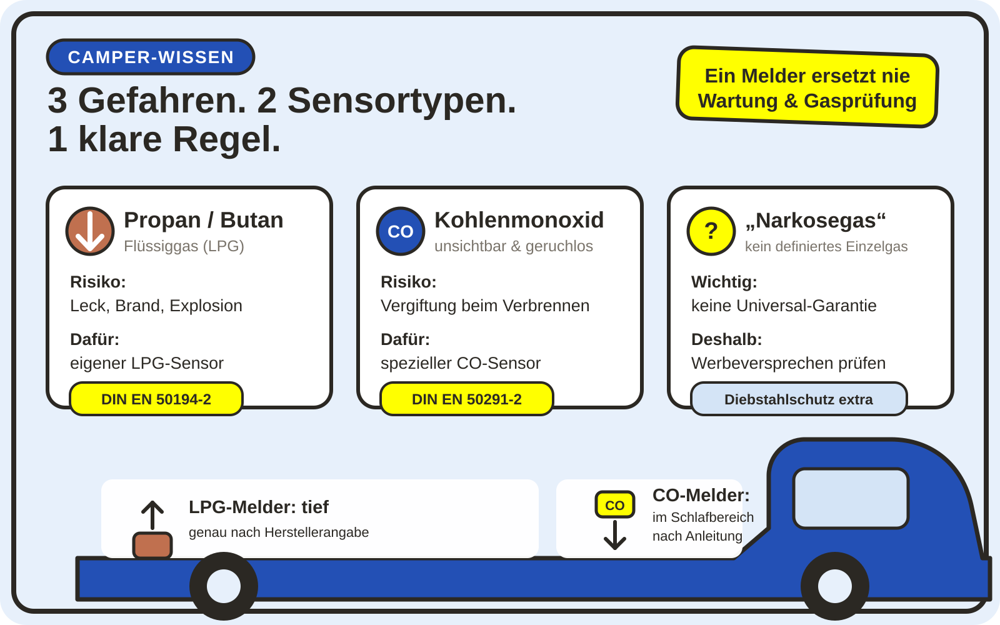

Gasmelder im Camper: Welcher Warner schützt wirklich?
Ein kleines Kästchen soll im Schlaf über unser Leben wachen. Das klingt beruhigend – funktioniert aber nur, wenn der Sensor wirklich zum Gas passt. Flüssiggas, Kohlenmonoxid und das oft beworbene „Narkosegas“ sind drei verschiedene Themen. Ich habe deshalb den 15-Geräte-Labortest aus Reisemobil International 02/2025 und 03/2025 ausgewertet und mit den aktuellen Normen und Sicherheitshinweisen abgeglichen.
Kurzfassung für Eilige
- Für Propan und Butan brauchst du einen ausgewiesenen LPG-Sensor.
- Für Kohlenmonoxid brauchst du einen eigenen CO-Sensor; ein breitbandiger LPG-Sensor ist kein verlässlicher Ersatz.
- Prüfe die EU-Konformitätserklärung auf DIN EN 50194-2 für brennbare Gase beziehungsweise DIN EN 50291-2 für CO in Freizeitfahrzeugen.
- LPG-Melder werden üblicherweise tief, CO-Melder im Bereich der Atem- beziehungsweise Schlafzone montiert – entscheidend bleibt die Anleitung des konkreten Geräts.
- Ein „Narkosegaswarner“ kann keine unbekannte Liste aller denkbaren Stoffe garantieren. Behandle diese Funktion als Zusatz, nicht als Einbruchschutz.
Drei Gefahren, die gern in einen Topf geworfen werden
Propan & Butan
Brennbares Flüssiggas kann aus Flasche, Schlauch, Regler oder Leitung austreten. Gesucht wird ein Melder für LPG beziehungsweise brennbare Gase.
Kohlenmonoxid
Das giftige Verbrennungsprodukt ist farb- und geruchlos. Es erfordert einen dafür konstruierten CO-Sensor und eine andere Montageposition.
„Narkosegas“
Das ist kein einzelner, technisch klar definierter Stoff. Ein Gerät kann nur die Stoffe erkennen, für die sein Sensor ausgelegt und geprüft wurde.

1. LPG: Wenn Propan oder Butan austritt
Im Camper versorgt Flüssiggas häufig Kocher, Heizung oder Kühlschrank. Entweicht Propan oder Butan unverbrannt, entsteht neben der Erstickungsgefahr vor allem ein Brand- und Explosionsrisiko. Beide Gase sammeln sich eher in tiefen Bereichen. Deshalb sitzt ein LPG-Sensor nach der jeweiligen Herstelleranleitung üblicherweise bodennah und nicht irgendwo bequem auf Augenhöhe.
Für fest installierte Warner in Freizeitfahrzeugen ist die DIN EN 50194-2:2020-08 der wichtige Bezug. Sie beschreibt Prüfverfahren und Leistungsanforderungen für Geräte, die LPG oder Benzindämpfe erkennen und optisch sowie akustisch warnen. Ein Hinweis auf diese Norm in der aktuellen EU-Konformitätserklärung ist aussagekräftiger als eine Produktseite voller Schlagwörter.
Wichtig: Der Melder soll austretendes Gas bemerken, bevor eine kritische Konzentration erreicht wird. Er verhindert das Leck aber nicht. Flaschenventil, Druckregler, Schlauch, Leitungen und Geräte müssen trotzdem in Ordnung sein.
2. CO: Die unsichtbare Gefahr beim Verbrennen
Kohlenmonoxid entsteht bei unvollständiger Verbrennung – zum Beispiel durch ein defektes Gerät, gestörte Abgasführung oder ungeeignete Verbrennungsgeräte im Innenraum. CO kann weder gerochen noch gesehen werden. Genau deshalb ist ein hörbarer CO-Warner im kleinen Schlafraum eines Campers so wichtig.
Die DIN EN 50291-2:2020-10 behandelt CO-Warngeräte für den kontinuierlichen Betrieb in Freizeitfahrzeugen und ähnlichen Umgebungen einschließlich Sportbooten. Für Auswahl, Installation, Nutzung und Wartung gibt es zusätzlich den aktuellen Leitfaden DIN EN 50292:2024-07.
Ein häufiger Denkfehler lautet: Ein Sensor, der Propan und Butan erkennt, werde CO irgendwie mit erfassen. Im RMI-Test versagten mehrere so beworbene Breitbandsensoren bei CO, während separate, speziell dafür angebotene CO-Sensoren derselben Systeme funktionierten. Meine klare Schlussfolgerung: Wenn CO auf der Packung steht, muss auch ein echter, dafür ausgewiesener CO-Sensor dahinterstecken.
3. Was ist mit „Narkosegas“?
Geschichten von Reisenden, die während eines Einbruchs angeblich mit Gas betäubt wurden, halten sich hartnäckig. Das Problem beginnt schon beim Begriff: „Narkosegas“ nennt keinen eindeutigen Stoff. Ein Sensor kann aber nicht auf ein Wort reagieren, sondern nur auf bestimmte chemische Verbindungen oder Stoffgruppen.
Für die Nachprüfung setzte RMI Trichlorethylen ein und wählte 240 ppm als Testkonzentration. Die Redaktion betont selbst, dass es für eine allgemeine „Narkosegas“-Sensorik keine eigene DIN-Prüfnorm gibt. Im begleitenden Artikel wird außerdem zwischen zwei Situationen unterschieden: Eine große Gasmenge, die wache Menschen geräuschlos und punktgenau einschläfert, wird als wenig plausibel bewertet; eine niedrige Konzentration bei bereits Schlafenden könne theoretisch anders wirken. Harte Nachweise konkreter Überfälle lagen der Redaktion nach eigener Angabe nicht vor.
Darum würde ich diese Zusatzfunktion nie zum Hauptkriterium machen. Sie kann interessant sein, wenn ein verlässlicher LPG-Warner bestimmte Lösemitteldämpfe ebenfalls erkennt. Gegen Einbruch helfen aber Türsicherung, Alarmanlage, ein sicherer Übernachtungsplatz und das eigene Verhalten. Ein Gaswarner ersetzt diese Maßnahmen nicht.
Was der RMI-Labortest 2025 tatsächlich geprüft hat
Der von dir fotografierte Sonderdruck fasst zwei Veröffentlichungen aus Reisemobil International 02/2025 und 03/2025 zusammen. Getestet wurden 15 Geräte beziehungsweise Varianten sowie Zusatzsensoren. Neben der Reaktion auf Propan/Butan, Kohlenmonoxid und später Trichlorethylen betrachtete die Redaktion unter anderem Stromverbrauch, Alarmlautstärke, Selbsttest, Fehleranzeige, Kennzeichnung und Montagehinweise.
Bei LPG und CO orientierte sich die Redaktion an den Konzentrations- und Zeitvorgaben der einschlägigen Normen. Der Narkosegastest war dagegen ein redaktionell entwickelter Zusatztest. Besonders auffällig war nicht nur, ob ein Alarm kam, sondern auch, ob ein Gerät einen defekten Sensor meldete und ob die Anleitung zum richtigen Montageort führte.
Die vier im Sonderdruck positiv bewerteten Produktfamilien
Die folgende Übersicht gibt den Stand der getesteten Muster von Ende 2024 wieder. Sie ist keine aktuelle Preis- oder Kaufgarantie: Hersteller können Hardware, Software, Anleitung oder Modellnamen inzwischen geändert haben.
| Modellfamilie | Getestete Aufgabe | RMI-Endnote | Wichtige Einordnung |
|---|---|---|---|
| Thitronik G.A.S. | LPG und Trichlorethylen | Sehr gut | Eigenständiger Kohlenwasserstoff-Warner; kein CO-Melder. |
| Thitronik G.A.S. Pro III | Getrennte CO- oder LPG-Zentrale, kombinierbar mit passendem Zusatzsensor | Sehr gut | Die richtige Version und der richtige Zusatzsensor sind entscheidend. |
| AS-Schwabe H-AL 8300 | LPG und Trichlorethylen | Gut | Frühe Warnung, im Test aber hoher Stromverbrauch und sehr hohe Empfindlichkeit; kein CO-Sensor. |
| Carbest Gas-Stick | LPG und Trichlorethylen | Gut | Sehr empfindlich und mobil; Montage, Stromversorgung und mögliche Fehlalarme bedenken. |
RMI bewertete die übrigen getesteten Muster „mit Schwächen“ oder „mangelhaft“. Ich mache daraus bewusst keine dauerhafte schwarze Liste: Maßgeblich sind das aktuelle Modell, die aktuelle Konformitätserklärung und nachvollziehbare neue Prüfberichte. Die vollständigen Einzelurteile stehen im verlinkten Sonderdruck.
Meine Kauf-Checkliste für einen Gasmelder
- Gefahr festlegen: Möchtest du LPG, CO oder beides überwachen? Bei beidem sind zwei passende Sensoren oder ein System mit getrennten Sensorelementen nötig.
- Fahrzeugnorm suchen: DIN EN 50194-2 für brennbare Gase und DIN EN 50291-2 für CO sind speziell auf Freizeitfahrzeuge zugeschnitten.
- EU-Konformitätserklärung lesen: Nicht nur ein CE-Zeichen auf einem Shopfoto anschauen. Die Erklärung sollte das konkrete Modell, den Hersteller und die angewandten Normen nennen. Die EU weist darauf hin, dass die CE-Kennzeichnung grundsätzlich auf der Verantwortungserklärung des Herstellers beruht.
- Sensorart prüfen: Bei CO ausdrücklich einen speziellen CO-Sensor verlangen. Ein unscharfes „3-Gas“ oder „Universal“ reicht mir nicht.
- Fehleranzeige und Lebensdauer: Das Gerät soll einen Sensorfehler und das Ende der Sensorlebensdauer erkennbar melden. Prüfe, ob Sensor oder komplettes Gerät später ersetzt werden müssen.
- Alarm hören können: Der Ton muss dich am Schlafplatz zuverlässig wecken. Menschen mit eingeschränktem Hörvermögen brauchen gegebenenfalls eine kompatible optische oder vibrierende Zusatzwarnung.
- Strombedarf realistisch rechnen: Im RMI-Vergleich lag der Tagesverbrauch sehr weit auseinander. Bei autarkem Stehen zählt jeder Ah – abschalten darfst du den Schutz im Schlaf trotzdem nicht.
- Originalanleitung vor dem Kauf ansehen: Stehen Montagehöhe, Abstände, Aufwärmzeit, Testintervall, Reinigung und Austauschdatum klar darin, ist das ein gutes Zeichen.
Montage: Ein falscher Platz macht den besten Sensor nutzlos
LPG-Warner gehören nach Anleitung meist tief in den Innenraum, weil Propan und Butan nach unten sinken. Sie dürfen nicht im Gaskasten verschwinden, wenn sie die Atem- und Wohnzone überwachen sollen. Vermeide tote Ecken, direkte Spritzbereiche sowie Stellen unmittelbar neben Herd, Reinigungsmitteln oder Haarspray, sofern der Hersteller dort Fehlalarme erwartet.
CO verhält sich anders und verteilt sich mit der Raumluft. Der CO-Melder gehört so in beziehungsweise nahe den Schlafbereich, wie es die Anleitung für einen Camper vorgibt. Einfach beide Sensoren nebeneinander am Boden zu montieren, nur weil es hübsch aussieht, wäre keine gute Lösung.
Fest angeschlossene Geräte brauchen eine dauerhaft sichere, abgesicherte Versorgung. Mobile oder batteriebetriebene Geräte müssen ausdrücklich für den vorgesehenen Einsatz geeignet sein. Teste die Warnfunktion in den vom Hersteller genannten Abständen und ersetze Batterien, Sensor oder Gerät fristgerecht. Bitte niemals mit Feuerzeuggas, Abgas oder einer offenen Flamme „testen“.
Was tun, wenn der Alarm losgeht?
- Keine Flamme, nicht rauchen und keine elektrischen Schalter bedienen.
- Alle Personen sofort ins Freie bringen.
- Nur wenn es ohne Verzögerung und ohne Risiko möglich ist: Flaschenventil schließen und von außen lüften.
- Bei starker, anhaltender oder unklarer Gefahr 112 rufen.
- Anlage erst nach fachlicher Prüfung wieder benutzen.
- Alle sofort wecken und den Camper verlassen.
- An die frische Luft gehen und draußen bleiben.
- 112 rufen – besonders bei Kopfschmerz, Schwindel, Übelkeit, Benommenheit oder Atemnot.
- Nicht zurückgehen, bis Einsatzkräfte oder Fachleute Entwarnung geben.
- Ursache vor der nächsten Nutzung fachlich klären lassen.
Der Deutsche Feuerwehrverband rät bei CO-Alarm zum sofortigen Verlassen, zum Notruf 112 und dazu, nicht wieder hineinzugehen. Diese Reihenfolge gilt im Camper genauso – der kleine Innenraum kann sich besonders schnell füllen.
Der Melder ersetzt die Gasprüfung nicht
Seit dem 19. Juni 2025 ist die wiederkehrende Prüfung betroffener Flüssiggasanlagen in deutschen Freizeitfahrzeugen verpflichtend. § 60 StVZO verweist auf das DVGW-Arbeitsblatt G 607. Geprüft wird vor der ersten Inbetriebnahme, nach prüfpflichtigen Änderungen und anschließend spätestens alle 24 Monate. Der DVGW erklärt dazu: Leitungen, Geräte und die gesamte Anlage müssen regelmäßig durch Sachkundige kontrolliert werden.
Das ist keine Doppelung. Die Prüfung soll Mängel verhindern und finden; der Warner soll zusätzlich Alarm schlagen, falls trotzdem Gas oder CO auftritt. Genau wie Sicherheitsgurt und Bremse erfüllen beide unterschiedliche Aufgaben.
Häufige Fragen
Brauche ich im Camper einen LPG- und einen CO-Melder?
Wenn du eine Flüssiggasanlage und Verbrennungsgeräte nutzt, ist die Kombination sinnvoll. Wähle entweder zwei geeignete Geräte oder ein System mit klar getrennten LPG- und CO-Sensoren. Ein einziger Breitbandsensor mit einem pauschalen „für alles“ überzeugt mich nicht.
Erkennt ein Rauchmelder auch Kohlenmonoxid?
Nein. Ein Rauchmelder reagiert auf Rauchpartikel, ein CO-Warner auf Kohlenmonoxid. Es gibt Kombigeräte, aber darin müssen trotzdem getrennte, für ihre Aufgabe ausgewiesene Sensortechniken stecken.
Beweist der Testknopf, dass der Gassensor richtig misst?
Der Testknopf prüft je nach Modell Elektronik, Anzeige und Alarmgeber; wie umfassend der Sensor selbst überwacht wird, steht in der Anleitung. Ein Knopftest ersetzt weder die automatische Fehlerüberwachung noch den fristgerechten Sensortausch.
Reicht die CE-Kennzeichnung beim Kauf?
Sie ist wichtig, aber kein unabhängiges Testsiegel. Lass dir die aktuelle EU-Konformitätserklärung zeigen und prüfe, ob dort dein exaktes Modell sowie die passende Freizeitfahrzeugnorm genannt sind.
Wie lange hält ein Gas- oder CO-Melder?
Das hängt von Sensor und Gerät ab. Suche nach Herstellungs-, Austausch- oder End-of-Life-Angaben und halte dich an das kürzere genannte Intervall. Ein alter Sensor wird nicht dadurch zuverlässig, dass die LED noch leuchtet.
Fazit: Nicht „ein Gerät für alles“, sondern der richtige Schutz für jede Gefahr
Mein wichtigstes Ergebnis aus dem großen Test ist überraschend einfach: Beim Gasmelder zählt Spezialisierung mehr als eine lange Liste auf der Verpackung. Für Propan und Butan gehört ein geeigneter LPG-Sensor an den richtigen tiefen Montageort. Für Kohlenmonoxid gehört ein echter CO-Sensor in den Schlafbereich. Und wer zusätzlich vor bestimmten Lösemitteldämpfen gewarnt werden möchte, muss genau prüfen, welche Stoffe der Hersteller wirklich nennt und belegt.
Ich würde lieber ein nachvollziehbar dokumentiertes System mit zwei passenden Sensoren kaufen als ein billiges Universalgerät mit großen Versprechen. Dazu kommen Gasprüfung, freie Lüftungsöffnungen, gepflegte Geräte und ein Alarmplan, den alle Mitreisenden kennen. Sicherheit im Van ist kein einzelnes Kästchen – sondern eine Kette, bei der jedes Glied funktionieren muss.
Quellen, Transparenz und Datenstand
Stand: 6. September 2026. Die Magazinergebnisse beziehen sich auf die Ende 2024 getesteten Muster und die Veröffentlichungen von 2025. Produktänderungen nach dem Test sind möglich. Dieser Beitrag enthält keine bezahlten Produktlinks und ersetzt keine Beratung durch einen Gasfachbetrieb.
- Reisemobil International: 15 Gaswarner für Wohnmobile im Labortest
- Reisemobil International: Unsichtbare Gefahr – Gaswarner im Test
- Sonderdruck aus Reisemobil International 02/2025 und 03/2025 (PDF, bereitgestellt von Thitronik)
- DIN Media: DIN EN 50194-2 – brennbare Gase in Freizeitfahrzeugen
- DIN Media: DIN EN 50291-2 – CO-Warner für Freizeitfahrzeuge
- DIN Media: DIN EN 50292 – Auswahl, Installation und Wartung von CO-Warnern
- DVGW: Sicher unterwegs mit dem Camper
- Gesetze im Internet: § 60 StVZO – Flüssiggasanlagen in Fahrzeugen
- Deutscher Feuerwehrverband: Verhalten bei CO-Alarm
- Europäische Union: CE-Kennzeichnung und Herstellerverantwortung
Bis bald und immer sichere Fahrt,
eure Tussy 💛